本期速览
02 DeepSeek 千亿融资表决权归梁文锋
04 FSD V15 可视化加入虚拟相机视角
05 Signal 限制安卓iOS截屏功能
07 Inkling2Mini本地提速1.8倍
10 Discord 改用Rust重写客户端
12 OpenAI 收紧模型转售网关审批
01｜Claude 技能从图片生成3D机械模型
来源（X） · @HeLi8866 · 2026-11-20 13:50
有位老哥开源了个 Claude 技能，你只要丢给它一张图片，它能直接给你生成一个极其精细、甚至能逐层拆解的 3D 机械模型！
我用一张 ChatGPT 渲染的图，发给它一个词：章鱼，结果出乎意料的好。
Claude 直接拿那张图当参考，硬生生用 Three.js 从零把每一个外壳、轮子和镜头全给建了出来。
细节夸张到什么程度？
眼睛打开，里面是个 10 叶片的机械虹膜，后面还带 62mm 的光环。
4 毫米厚的硼硅玻璃穹顶能升起来，在半空中翻转。
8 条机械臂，每条臂上两排吸盘轮，一直延伸到 16 节组成的螺旋尖端。
这 8 条臂全连在一个 48 齿的轮毂上，一解开，16 根软管直接散开。
离谱的是它的拆解动画：每 3 秒脱落一个部件，到第 19 秒时，整个模型完全解体，什么都不剩。
并且这只细节拉满的章鱼，甚至都不在这个技能官方预设的 3 种动物模板里。
详细的安装命令在下面 👇
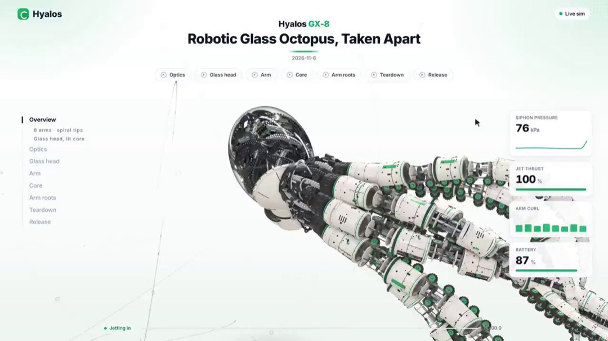
引用内容
Isagii @isagi1000x
中文译文
原文
02｜DeepSeek 千亿融资表决权归梁文锋
来源（X） · @oldfrog123 · 2026-11-20 18:55
Deepseek的工商备案出来了，DeepSeek 第二轮融资一口气融了 1000 亿人民币。后面有 31 家投资方，腾讯、中国移动、中国电信、宁德时代、小红书、vivo、IDG、中信证券全是顶级扛把子。
梁文锋把这 31 家全放在杭州程砚这家合伙控股公司里面，这家公司一共拿了 DeepSeek 17.265% 的股份。梁文锋自己的管理公司在这个平台里的直接持股，从 83.33% 降到了 0.0001%，但他掌握着 99% 的控制权。那 31 个扛把子，表决权直接是 0！
看看人家梁文峰，从别人手里面拿了1000亿，那些机构敢在董事会说一个不？
老黄要是当年有梁文锋一半精明，现在也不至于63岁再出发！

03｜美股AI股重定价纳指跌入修正区
来源（X） · @mafang71 · 2026-11-22 06:10
重创公司：英伟达周五跌14%，从高点蒸发超2.7万亿市值；AMD、博通、美光等芯片股跌12-14%；Anthropic上市次日跌约9%。
主要洗的是追高AI热潮的投资者，散户在跌前仍在加仓相关股，损失较重，机构同步减仓。
04｜FSD V15 可视化加入虚拟相机视角
来源（X） · @SawyerMerritt · 2026-11-22 03:39
中文译文
以下是 FSD V15 中的全新 FSD 可视化界面。它会持续渲染一个从车辆上方任意虚拟摄像机视角传来的画面。
即将到达的导航转向会直接显示在驾驶可视化界面中。转向信号灯的声音变得更小，点击几下后就会淡出。
原文
Here are the new FSD visualizations in FSD V15. It continuously streams a view from an arbitrary virtual camera situated above your vehicle.
Upcoming navigation turns display directly in the driving visualization. Turn signals are quieter and fade out after a few clicks.
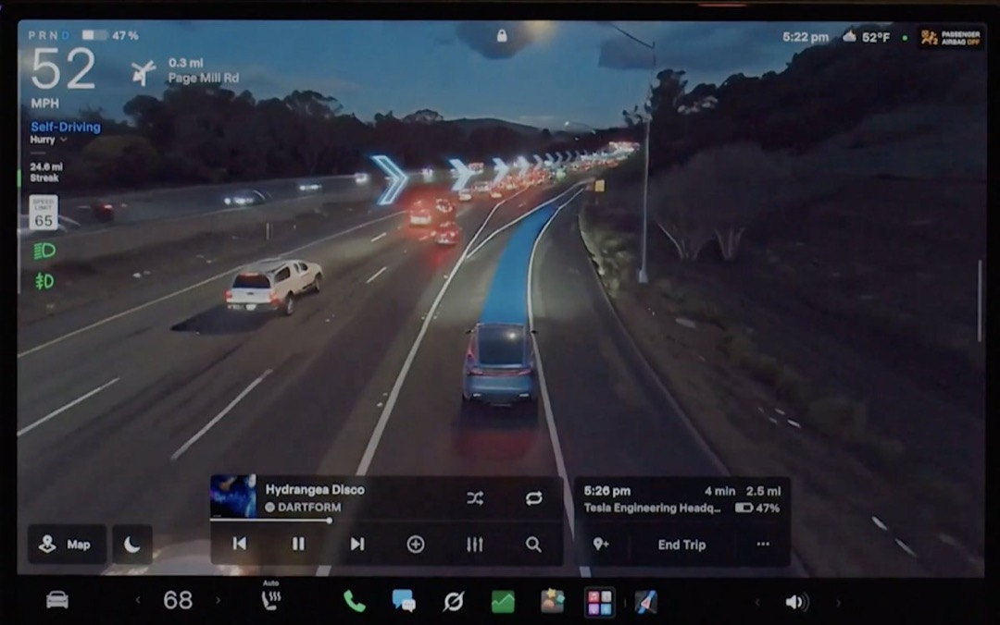
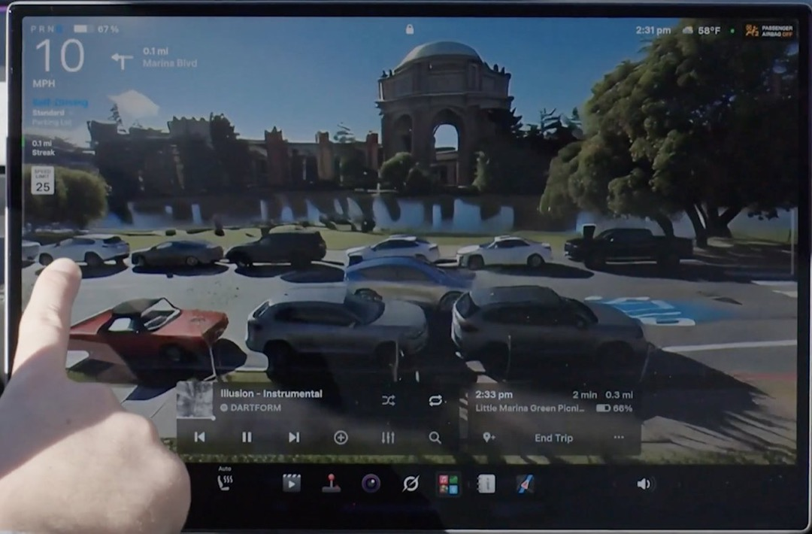
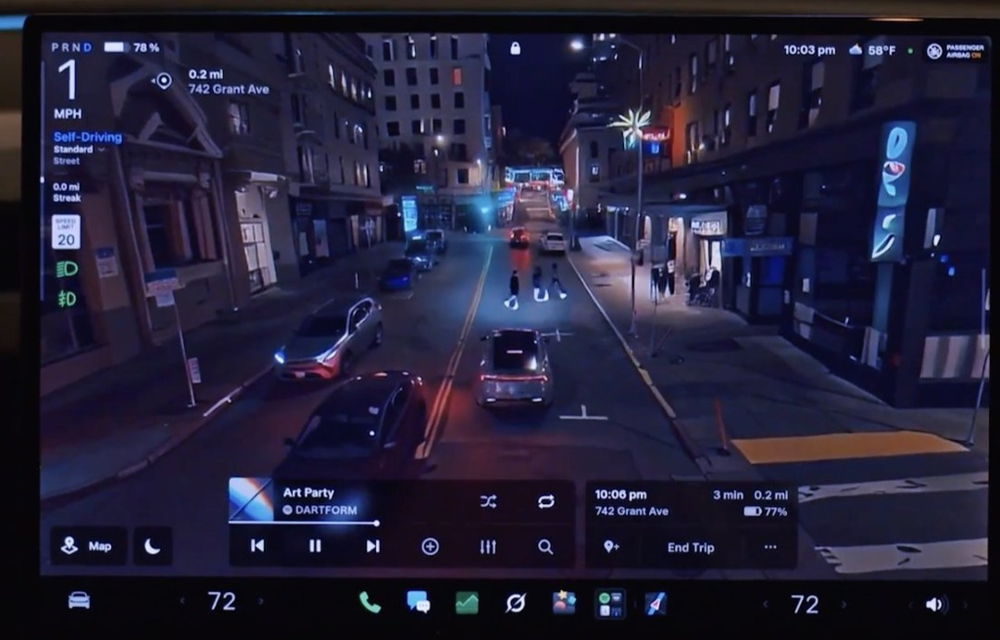
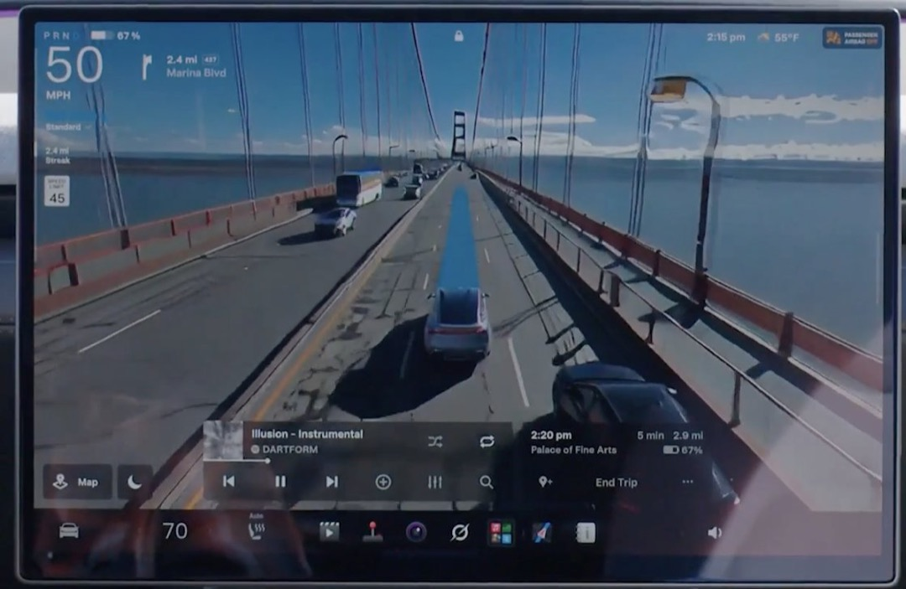
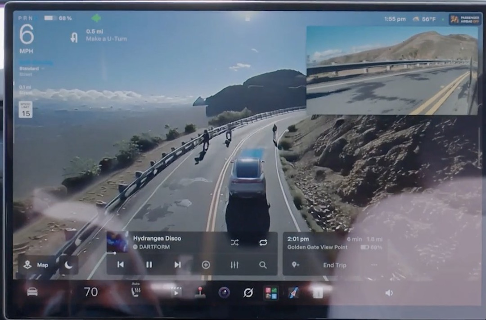
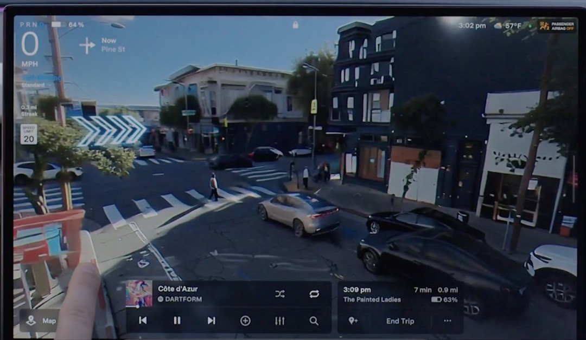
05｜Signal 限制安卓iOS截屏功能
来源（X） · @TechCrunch · 2026-11-22 05:39
中文译文
Signal 正在限制用户在 Android 和 iOS 应用中截取屏幕截图的能力。
https://spr.ly/6014By5rfC
原文
Signal is limiting users' ability to take screenshots in both its Android and iOS apps.
https://spr.ly/6014By5rfC
06｜TTT 将推理推向访存带宽受限
来源（X） · @rickawsb · 2026-11-22 05:21
你看懂了吗？
引用内容
夜谈 @gntalktalk
传统推理之所以便宜高效，是因为成百上千个用户共享同一套静态权重，芯片只需读取一次权重就能批量计算。
一旦引入 TTT，每个用户的对话都会在推理现场实时修改局部的“快权重（Fast Weights）”。这意味着每个请求都演化出了独一无二的私有参数，多用户共享彻底失效，芯片被迫陷入高频的“读取-修改-写回”显存风暴；
未来的 AI 算力系统发展趋势可能能被简单理解为一个“类脑昼夜双循环”：
在白天（在线推理与 TTT 探索期）： 模型在执行任务时实时更新私有快权重，就像人类在清醒时不断吸收新经验。这一阶段彻底打破了大 Batch 共享，高度依赖 HBM4 的超高双向带宽与百兆字节级片上缓存，算力消耗将占到全生命周期的 70% 以上。
在夜晚（周期性权重巩固期）： 后台系统会像大脑在睡眠中整理记忆一样，将边缘端探索出的高价值私有快权重，定期蒸馏、压缩回全网共享的静态“慢权重”底座中，从而重新恢复大 Batch 推理的极低边际成本。
这场由 TTT 引发的架构与算力范式转移，在 AI 芯片设计、存储产业链以及递归自改善（RSI）等多个前沿领域具有深远的意义与影响：
1、重新定义下一代 AI 芯片与存储的竞争壁垒，包括但不限于 HBM4 逻辑基底（Base Die）近存计算、超大片上 SRAM 以及共封装光学（CPO）。TTT 让推理从“算力受限”彻底变成了“访存带宽受限”。为了避免海量私有权重在芯片间频繁搬运耗尽功耗，将计算单元直接集成在 HBM4 底层逻辑芯片上的近存计算架构（Near-Memory Computing）将成为胜负手，而光子学的主战场也将精准锁定在芯片间高速互联（CPO），未来技术发展允许的情况下演变为光计算。
2、为通用人工智能的递归自改善（Recursive Self-Improvement, RSI）补齐“权重可塑性”拼图。传统大模型部署后权重即被冻结，无法在无人干预下持续进化。TTT 赋予了智能体在真实环境中“部署即学习（Continual Learning）”的能力，使其与测试时强化学习（Test-Time RL）结合，构成 RSI 嵌套双循环中微秒至小时级的“内环”，让 AI 能够把外部环境反馈直接内化为自身技能。
3、重塑大模型全生命周期的算力与数据预算分配逻辑。随着人类公开语料的信息熵逐渐枯竭，传统从零开始的预训练（Pre-training）将从占据 90% 算力的绝对主角，退居为占比 10%–20% 的“元学习底座”与“知识蒸馏容器”。算力与数据预算的重心将全面向推理侧探索与自动化科学仿真环境倾斜，推动 AI 从单纯模仿人类历史语料，走向在物理与数字世界中自主创造超人类知识。
07｜Inkling2Mini本地提速1.8倍
来源（X） · @exolabs · 2026-11-21 09:37
中文译文
我们与 @thinkymachines 合作，让 Inkling 2 Mini 在本地快速运行：
- 在 96GB M5 Ultra Mac Studio 上：解码 210 tok/sec，预填充 3620 tok/sec
- 在 48GB M5 Max MacBook Pro 上：解码 125 tok/sec，预填充 1750 tok/sec
它在 M5 Ultra Mac Studio 上构建了一个原生天气应用，速度比 Claude Sonnet 5.5 快 1.8 倍，成本低 11 倍（按 API 定价计算）。
循环架构非常适合 MacBook 等内存受限的本地设备。对模型的各层进行循环，可以在不增加模型大小的情况下，增加推理时的计算量（以及智能水平）。
原文
We worked with @thinkymachines to make Inkling 2 Mini run fast locally:
- 210 tok/sec decode, 3620 tok/sec prefill on 96GB M5 Ultra Mac Studio
- 125 tok/sec decode, 1750 tok/sec prefill on 48GB M5 Max MacBook Pro
It built a native weather app 1.8x faster than Claude Sonnet 5.5 on an M5 Ultra Mac Studio and 11x cheaper (API pricing).
The looping architecture is ideal for local devices like MacBooks, which are memory constrained. Looping layers of the model increases inference-time compute (and intelligence) without increasing the size of the model.
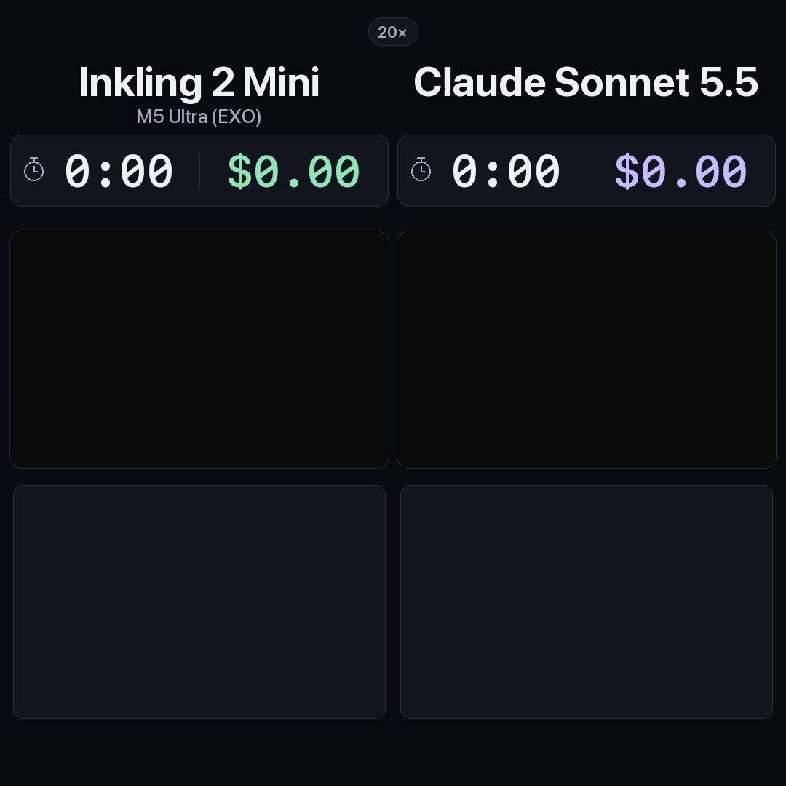
引用内容
Thinking Machines @thinkymachines
中文译文
有些人觉得 Inkling 2 Small 的 594B 参数量太大了。我们听到了你们的声音：Inkling 2 Mini 是一个循环 transformer，仅有 26B 参数，小到可以在你的笔记本电脑上运行，强到足以胜任 agentic 工作，AA Index 得分为 20.1。
https://thinkingmachines.ai/news/inkling-2-mini/
原文
Some of you thought that Inkling 2 Small was too big at 594B parameters. We heard you: Inkling 2 Mini is a looped transformer with just 26B parameters, small enough to run on your laptop, powerful enough for agentic work with a score of 20.1 on AA Index.
https://thinkingmachines.ai/news/inkling-2-mini/
08｜VoiceStudio 本地AI配音开源
来源（X） · @HeLi8866 · 2026-11-22 05:13
VoiceStudio 一个月猛涨 4.6 万 Star！这款免费开源的 AI 配音工作室，极其能打⬇️：
→ 支持 646 种语言
→ 一键 AI 声音克隆，完美复刻你的音色
→ 文字转语音、语音转文字全搞定
→ 视频自动翻译并配音
→ 批量生成有声书
→ 纯本地离线运行，隐私安全
最关键的是，无需注册，完美支持 Windows、Mac、Linux。
平时做短视频、搞 AI 配音或有声书的朋友，用这个能直接省下一堆昂贵的工具订阅费。
项目地址：
https://github.com/debpalash/VoiceStudio

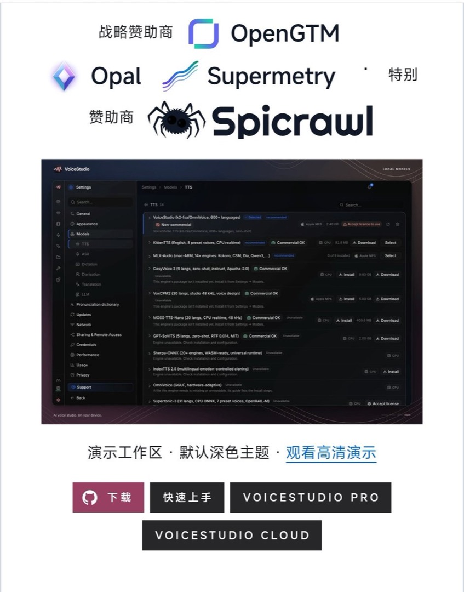
09｜字节阿里领跑344万枚芯片申请
来源（X） · @mafang71 · 2026-11-22 04:53
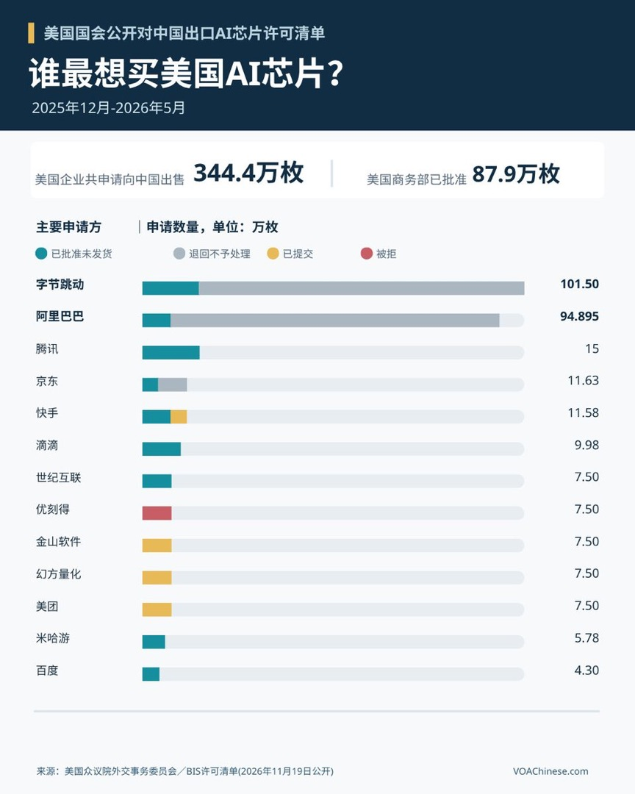
10｜Discord 改用Rust重写客户端
来源（X） · @InfoQ · 2026-11-22 04:35
中文译文
#Discord 正在放弃 Electron 和 React Native，转而使用 #RustLang。
这次重写承诺更低的内存占用、更快的启动速度，以及一个与原生移动视图共享的 Rust 核心。
🔗 了解更多：https://bit.ly/48vd5dq
#MobileDevelopment #DesktopDevelopment #NativeApps #Performance #InfoQ
原文
#Discord is ditching Electron and React Native for #RustLang.
The rewrite promises lower RAM usage, faster startup, and a shared Rust core with native mobile views.
🔗 Find out more: https://bit.ly/48vd5dq
#MobileDevelopment #DesktopDevelopment #NativeApps #Performance #InfoQ
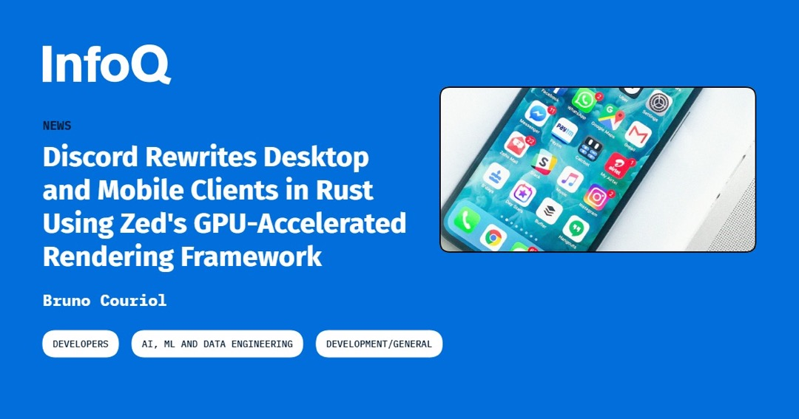
11｜Gemini 4 xhigh成本高6倍
来源（X） · @simonw · 2026-11-22 03:06
中文译文
Gemini 4 提示：Gemini 4 Hydrogen 在"high"思考努力下与同一模型在"xhigh"下的差异非常大。
以下是 high 与 xhigh 的 pelican 对比——high 成本 3.99 美分，使用了 5,311 个输出 token；xhigh 成本 23.61 美分，使用了 31,477 个输出 token
原文
Gemini 4 tip: the difference between Gemini 4 Hydrogen on "high" thinking effort and that same model on "xhigh" is VERY significant
Here's the high v.s. the xhigh pelican - high cost 3.99 cents and used 5,311 output tokens, xhigh cost 23.61 cents and used 31,477 output tokens
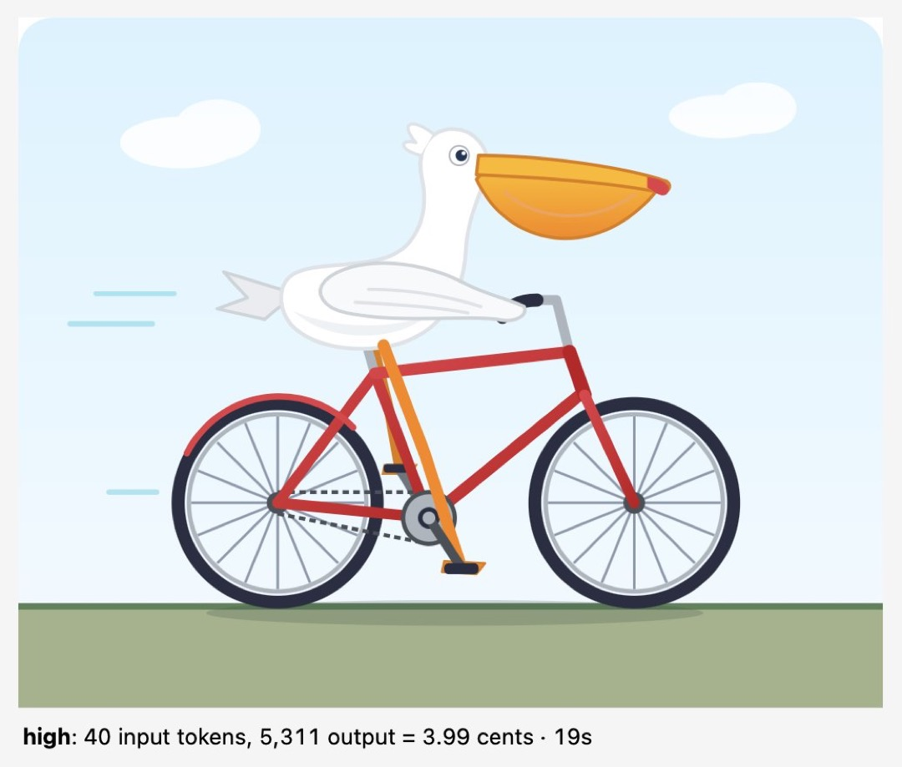
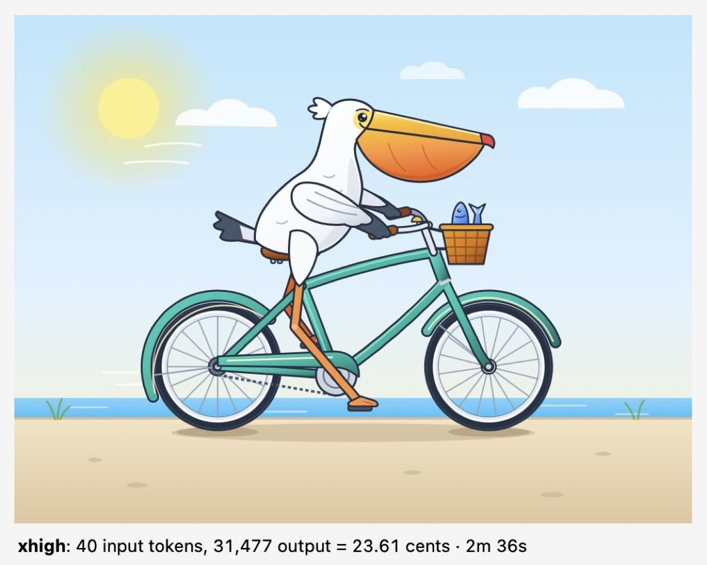
12｜OpenAI 收紧模型转售网关审批
来源（X） · @semafor · 2026-11-21 08:03
中文译文
OpenAI 制定了新规则，使公司对包括中国在内的全球各地访问其 AI 模型的程度拥有更大的控制权。
为第三方提供 OpenAI 技术访问的网关和路由器现在需要该公司的审核和批准。
https://www.semafor.com/article/11/20/2026/openai-tightens-grip-on-model-resellers
原文
OpenAI put a new rule in place that gives the company more control over how much of the world — including China — can access its AI models.
Gateways and routers that provide third-party access to OpenAI’s tech now need the company’s review and approval.
https://www.semafor.com/article/11/20/2026/openai-tightens-grip-on-model-resellers